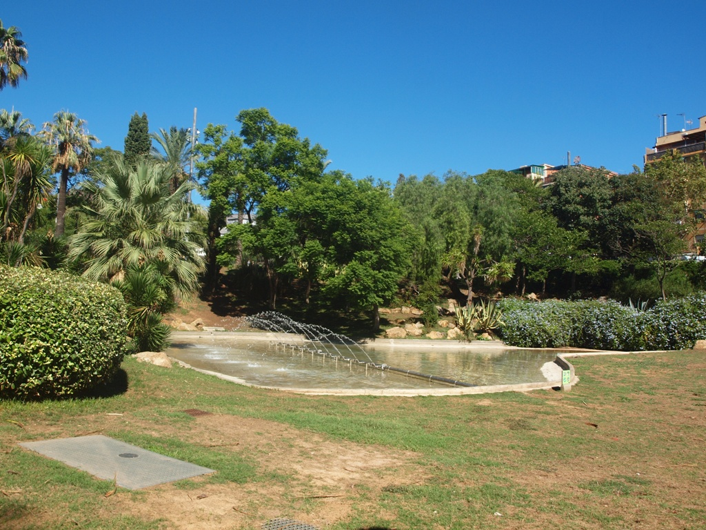

Nací en Barcelona, España. Viví durante diecinueve años en el Barri de Verdum, en Nou Barris, un barrio humilde y obrero, con un ambiente diverso que contribuyó a parte de mi visión del mundo que mantengo hasta el día de hoy.

Mi adolescencia fue una etapa convulsa, llena tanto de buenos como de malos momentos. En esa época descubrí el manga y el anime, y me adentré más en los videojuegos, aficiones que me acompañan hasta hoy. Este último me llevó eventualmente a terminar estudiando Desarrollo de Aplicaciones Web.
Mi paso por la ESO fue complicado. Repetí primero y finalmente la dejé en tercero. Años después, recién cumplidos los dieciocho, terminé mi formación básica en una escuela de adultos.
Fue mi hermano quien me convenció de orientarme hacia la informática, viendo mi pasión por los videojuegos. Empecé por un Grado Medio en Sistemas Microinformáticos y Redes en Barcelona, que terminé en Granada.
Durante las prácticas descubrí que lo que realmente me apasionaba era la programación web, y eso me llevó a cursar un Grado Superior en Desarrollo de Aplicaciones Web, también en Granada.